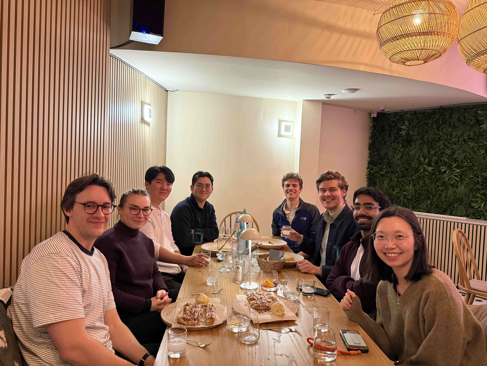

Maksym Andriushchenko

Email Substack X Scholar GitHub CV
👋 Short bio. I am a principal investigator at the ELLIS Institute Tübingen and the Max Planck Institute for Intelligent Systems, where I lead the AI Safety and Alignment group. I also serve as chapter lead for the new edition of the International AI Safety Report chaired by Prof. Yoshua Bengio. I collaborate closely with industry: I have participated in red-teaming efforts for OpenAI and Anthropic models, and the benchmarks I co-authored have been used by DeepMind, xAI, and Anthropic / UK AI Safety Institute. I obtained my PhD in machine learning from EPFL in 2024, supported by the Google and Open Phil AI PhD Fellowships. My PhD thesis received the ELLIS PhD Award and Patrick Denantes Memorial Prize for the best thesis in the computer science department at EPFL.
📣 I'm hiring! If you are interested in working with me, please fill out this Google form. I will review every application and reach out if there is a good fit. I'm hiring exceptional candidates in all areas, but I'm particularly looking for:
- one postdoc with a proven track record in AI safety,
- PhD students with a strong computer science background and ideally experience in cybersecurity, interpretability, or training dynamics (apply to CLS, ELLIS, IMPRS-IS by November 2025 to start in Spring–Fall 2026),
- master's thesis students (if you are already in Tübingen or can relocate to Tübingen for ~6 months),
- mentees for the Summer 2026 MATS cohort (apply directly via the MATS application portal).
🔍 Research topics. We focus on developing algorithmic solutions to reduce harms from advanced general-purpose AI models. We’re particularly interested in alignment of autonomous LLM agents, which are becoming increasingly capable and pose a variety of emerging risks. We’re also interested in rigorous AI evaluations and informing the public about the risks and capabilities of frontier AI models. Additionally, we aim to advance our understanding of how AI models generalize, which is crucial for ensuring their steerability and reducing associated risks. For more information about research topics relevant to our group, please check the following documents: International AI Safety Report, An Approach to Technical AGI Safety and Security by DeepMind, Open Philanthropy’s 2025 RFP for Technical AI Safety Research.
📝 Research style. We are not necessarily interested in getting X papers accepted at NeurIPS/ICML/ICLR. We are interested in making an impact: this can be papers (and NeurIPS/ICML/ICLR are great venues), but also open-source repositories, benchmarks, blog posts, even social media posts—literally anything that can be genuinely useful for other researchers and the general public. For example, our JailbreakBench and AgentHarm benchmarks were not only published at NeurIPS and ICLR but also used by DeepMind, xAI, and Anthropic / UK AI Safety Institute for evaluation of their new frontier LLMs.
🌟 Broader vision. Current machine learning methods are fundamentally different from what they used to be pre-2022. The Bitter Lesson summarized and predicted this shift very well back in 2019: “general methods that leverage computation are ultimately the most effective”. Taking this into account, we are only interested in studying methods that are general and scale with intelligence and compute. Everything that helps to advance their safety and alignment with societal values is relevant to us. We believe getting this—some may call it “AGI”—right is one of the most important challenges of our time. Join us on this journey!
AI Safety and Alignment Group

Group members:
- Ben Rank (PhD student)
- David Schmotz (PhD student)
- Jeremy Qin (PhD student)
- Jeanne Salle (PhD student, co-supervised with Sahar Abdelnabi)
- Alexander Panfilov (PhD student, co-supervised with Jonas Geiping)
- Hardik Bhatnagar (PhD student, co-supervised with Matthias Bethge)
- Yuchen Zhang (research intern)
- Jehyeok Yeon (research intern)
- Anietta Weckauff (research intern)
- Raffaele Mura (research intern)
- Jonas Wiedermann-Möller (master’s thesis)
- Changling Li (master’s thesis)
- Derck Prinzhorn (master’s thesis)
- Lena Libon (master’s thesis)
Alumni:
- Joshua Freeman (master’s project at ETH Zurich → SWE Intern at Meta)
- Hao Zhao (master’s thesis at EPFL → PhD student at EPFL)
- Hichem Hadhri (master’s project at EPFL → Data Science Intern at Swisscom)
- Tiberiu Musat (bachelor’s project at EPFL → MSc student at ETH Zurich)
- Francesco d’Angelo (PhD project at EPFL → PhD student at EPFL, Google PhD Fellowship)
- Théau Vannier (master’s project at EPFL → Research Engineer at InstaDeep)
- Jana Vuckovic (master’s project at EPFL → Data Science Intern at Credit Suisse)
- Mehrdad Saberi (Summer@EPFL intern → PhD student at University of Maryland)
- Edoardo Debenedetti (master’s project at EPFL → PhD student at ETH Zurich)
- Klim Kireev (PhD project at EPFL → PhD student at EPFL, researcher at MPI-SP)
- Etienne Bonvin (master’s project at EPFL → Security Engineer at Global ID SA)
- Oriol Barbany (master’s project at EPFL → PhD student at UPC and EPFL)